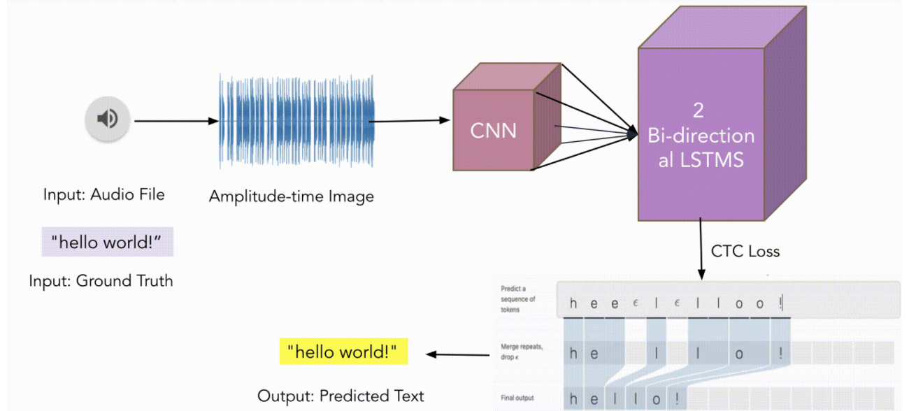
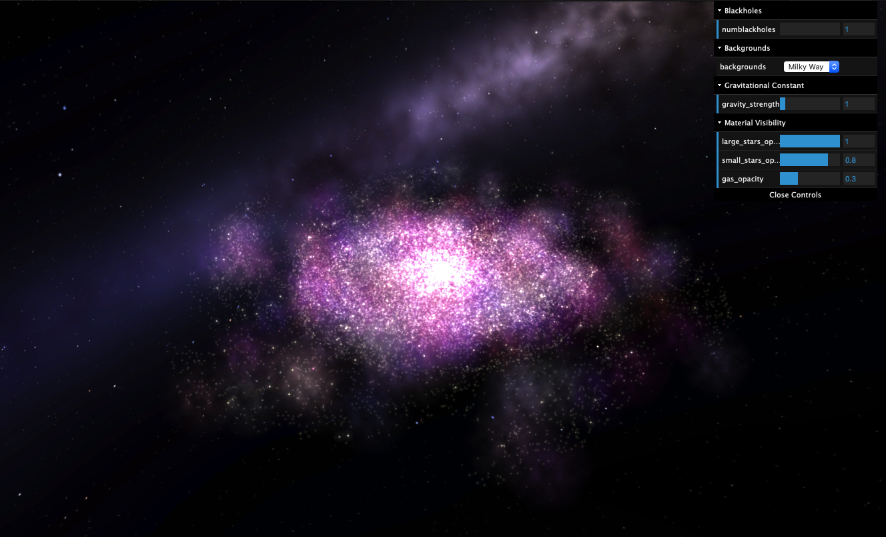
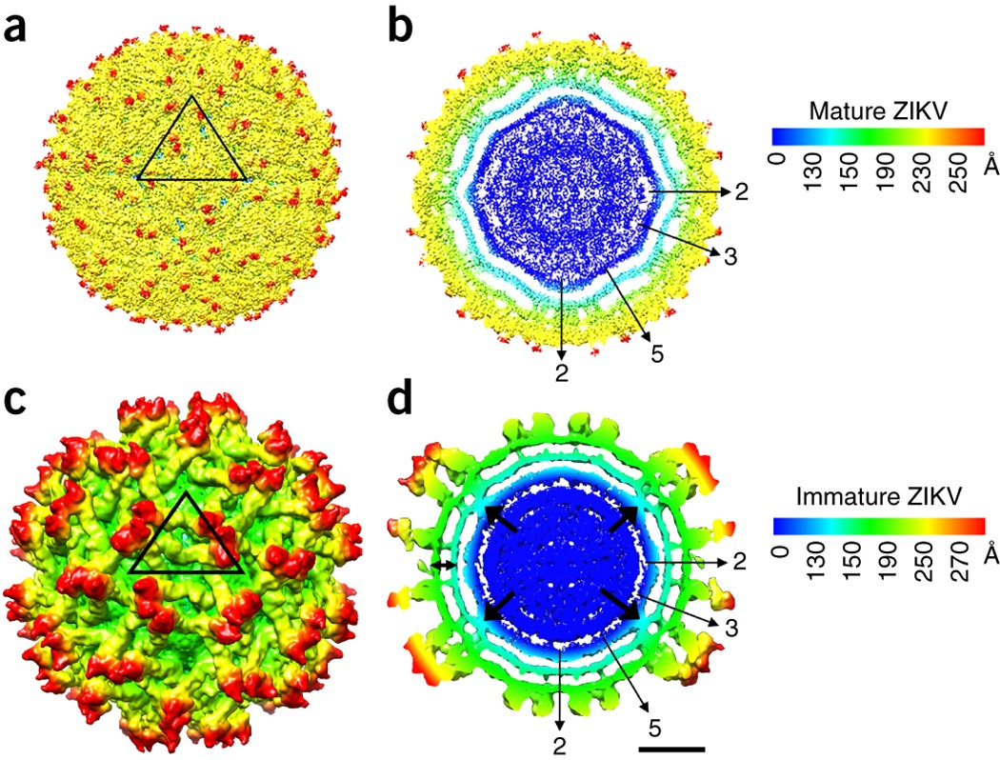
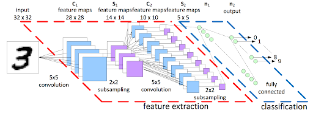
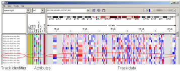

|
Tanmay Ghai
I am a M.S. Candidate in the computer science department at the Viterbi School of Engineering at the University of Southern California. I did my bachelor's at the University of California, Berkeley where I graduated from in May 2019.
I am also currently a Software Development Engineer II at Workday, a SaaS ERP solution for the cloud. Previously, I was an intern at Workday as well as at ServiceNow, another enterprise cloud computing platform.
Email /
CV /
LinkedIn /
Github /
Twitter
|
|
|
Research
Additionally, I am a Graduate Research Assistant at the Information Sciences Institute (ISI) at USC, advised by Prof. Srivatsan Ravi. I am researching Fully Homomorphic Encryption and its uses towards Privacy-Preserving Entity Resolution in a distributed fashion. My research statement can be found here.
My research interests are in the intersection of scalable distributed computing, cyber-security, data privacy, machine learning and their applications to real-world problems. Previously, I've been a part of the Integrated Circuits & Systems Group, advised by Prof. Ajay Joshi and Wei Wang's Lab at UCSD, advised by Dr. Wei Wang and Dr. Rizi Ai.
|
|
tl;dr about me
Outside of spending my time on code, I'm an avid sports fan, hindi music enthusiast, budding guitarist and foodie. I also try (pretty amateur-ly) to cover some contemporary Bollywood songs on my instagram, you can check them out here!
|
|
Some Stuff I've Worked On
|
|  |
Morse Code Decipherer Over Any Sound Medium
Tanmay Ghai,
Ankur Garg,
Revathi Mukkamala,
Onur Orhan,
Supriya Devalla
project page
Using a C-RNN architecture with CTC loss, built a fully functional DL model to decipher morse code audio into english text, irrespective of the audio source used to generate it
|
|  |
Real Time N-Body Cosmological Simulation
Aakash Parikh,
Tanmay Ghai,
Andrew Campbell
project page
live demo
Built a real-time n-body simulation in three.js and WebGL. Includes live depictions of gas clouds coalescing into stars orbiting around a black hole in the center of a disk galaxy
|
|
NBA Award Predictor via Machine Learning Algorithms
project code
Using data from basketball-reference.com, scraped NBA award and statistical data from 2000-2019. Created train-test data through splitting with various levels of cross-validation. Then, applied 5 different Machine Learning models to train and test results (Linear Reg, Lasso/Ridge Reg, Linear Support Vector Reg, Decision Tree Reg, Gradient Boosting). Achieved 74-82% accuracy overall for the various models
|
|  |
Protein Structure Reconstruction w/ Electron Microscopy
Nisha Janyaprayot,
Tanmay Ghai,
Shangxing(Tony) Jiang,
Fraser Holmes-Mackay,
CJ Kim
project page
project paper/writeup
Using Fourier transform theory and the backprojection algorithm, reconstructed 2D zika virus images to create a 3D interactive visualization. Collaborated with CS, Math, and Biology students from UC Berkeley
|
|  |
Algorithmic Learning and Training with Convolutional Neural Networks
Tanmay Ghai,
Prof. Ajay Joshi
project page
research poster
Conducted Research on Convolutional Neural Networks for facial image recognition/detection, achieved accuracy of about 77%. Advised by Prof. Ajay Joshi in the ICSG group at Boston University
|
|  |
Single Cell Transcriptomics Reveals Heterogeneity of Gene Expression in Mouse Cells
Nupur Banerjee,
Tanmay Ghai,
Dr. Rizi Ai,
Dr. Wei Wang
project page
research poster
Conducted tests of RNA-seq on mice cells and learned about single cell transcriptomics. Advised by Dr. Rizi Ai and Dr. Wei Wang in Dept. of Biochemistry at University of California, San Diego
|
|
{kind=link}